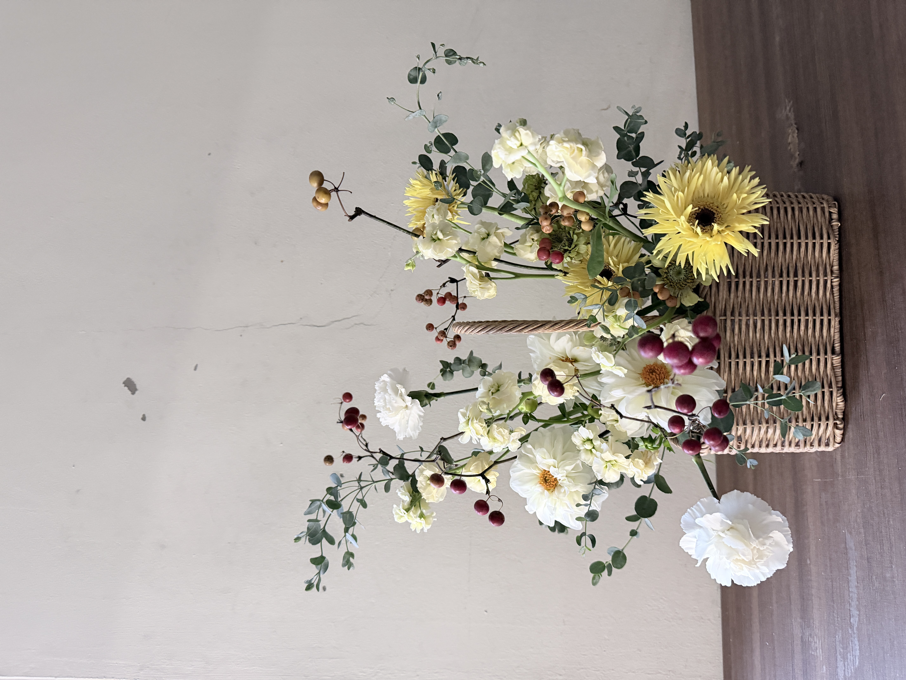
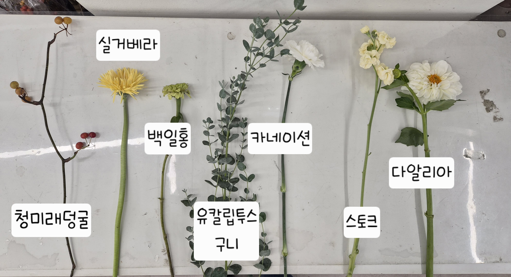
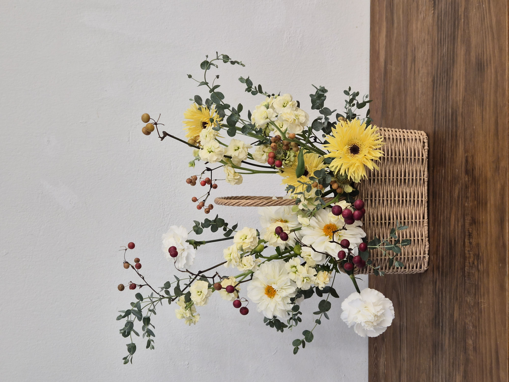
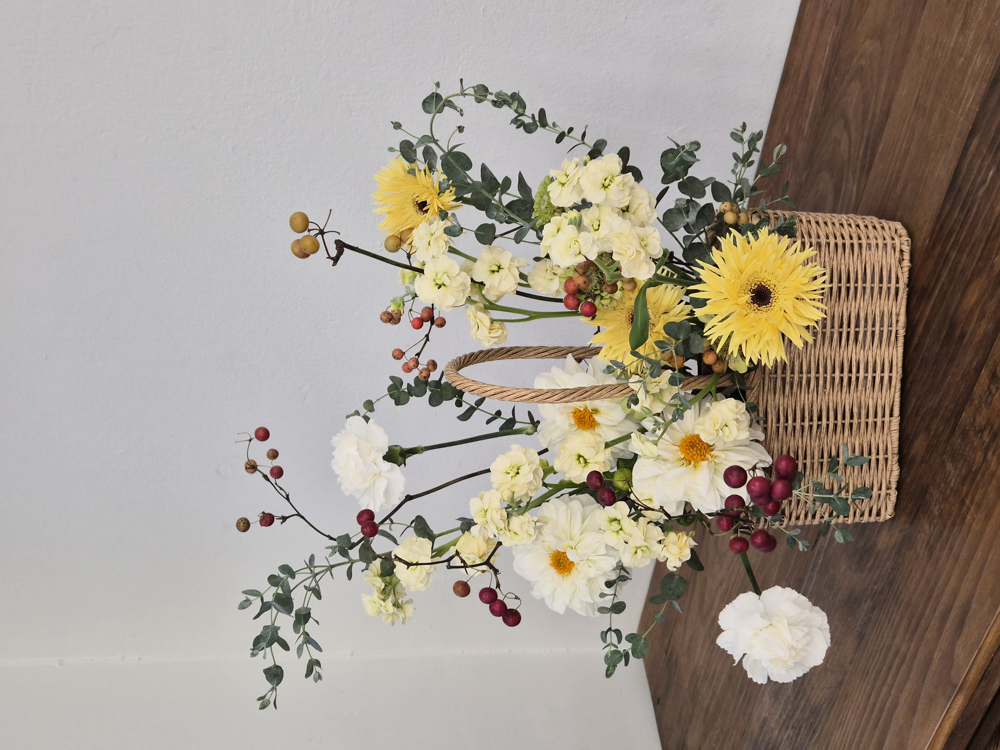
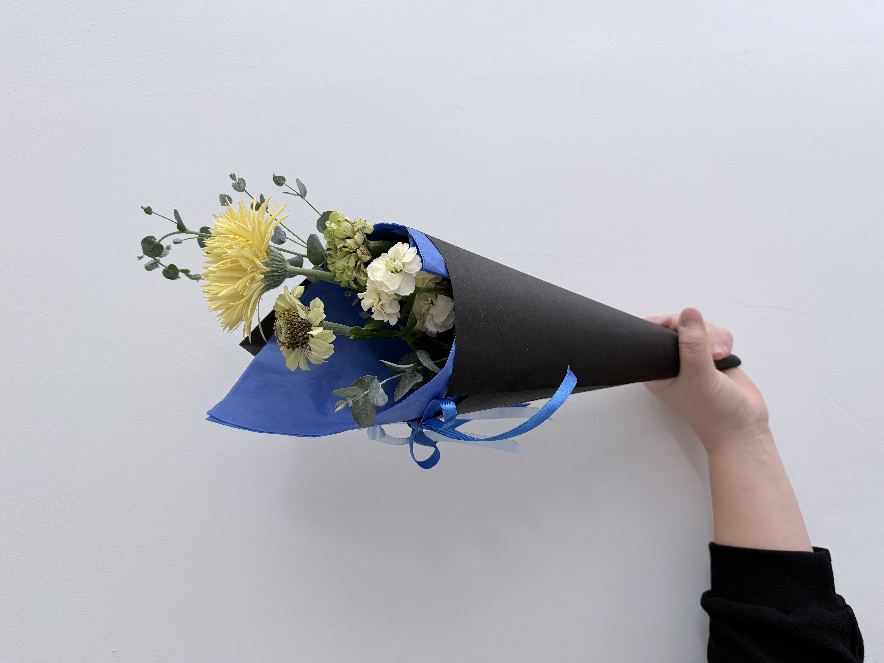
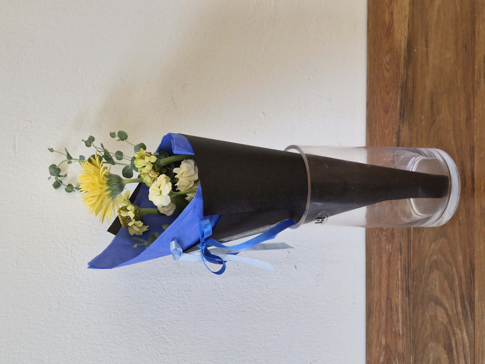
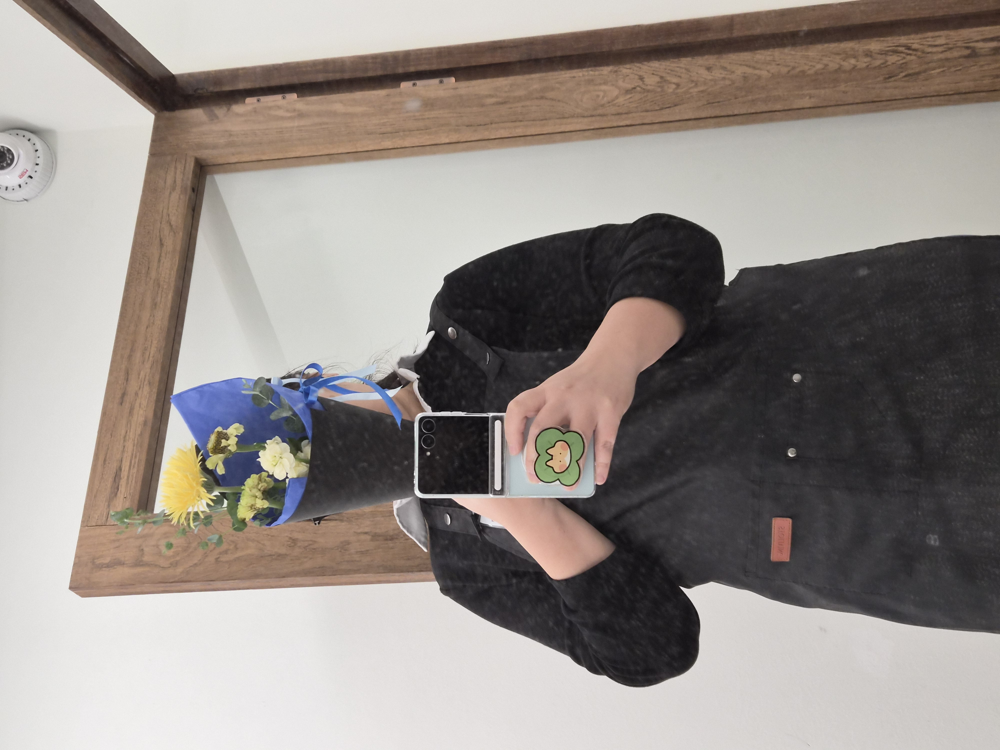

CLASS WORK · BASIC PRODUCTS
2026.10.24One Flower
Square Basket
ワンフラワーブーケとスクエアバスケット
03 / BASIC PRODUCTS
CONCEPT
Two ways to
shape a floral gift.
기초상품제작반 3회차에서 원플라워 콘 꽃다발과 스퀘어 꽃바구니를 제작했습니다. 같은 수업 안에서 간결한 꽃다발 포장과 넓게 펼쳐지는 바스켓 어레인지먼트의 차이를 살펴본 작업입니다.
꽃다발은 노란 실거베라를 중심으로 소량의 소재를 배치하고 블루·블랙 포장지로 형태를 정리했습니다. 바스켓은 화이트와 연노랑 꽃을 중심으로 청미래덩굴의 열매와 유칼립투스 가지를 뻗게 하여, 사각 바구니 위로 높낮이와 움직임이 나타나도록 구성했습니다.
基礎商品制作コースの第3回で、ワンフラワーのコーンブーケとスクエアバスケットを制作しました。ブーケでは黄色いガーベラを主役に包みの形を整え、バスケットでは白と淡い黄色の花に実ものやユーカリを合わせ、広がりのある構成を試みました。
COLOR PALETTE
色の構成
Butter yellow,
soft ivory,
berry red.
부드러운 화이트·아이보리와 버터 옐로우를 기본으로, 청미래덩굴 열매의 붉은빛을 작은 포인트로 사용했습니다. 회녹색 유칼립투스는 꽃과 선 소재 사이를 연결하고, 원플라워 꽃다발에서는 블루 포장지가 노란 꽃을 선명하게 드러냅니다.
白とアイボリー、バターイエローを基調に、サンキライの実の赤みをアクセントとして加えました。ユーカリのグレイッシュグリーンが全体をつなぎ、ワンフラワーブーケでは青いラッピングが黄色い花を引き立てています。
SOFT IVORY
#F3F0E4BUTTER YELLOW
#F2D76FPALE LEMON
#F0E8B6BERRY RED
#9B4050EUCALYPTUS GREEN
#7E9181CONE BLUE
#396AC2MATERIALS
使用花材
꽃이 만들어내는 둥근 볼륨과 가지·열매가 만드는 선의 움직임을 함께 살펴보았습니다. 실거베라와 다알리아, 카네이션, 스토크, 백일홍의 서로 다른 꽃 형태에 청미래덩굴과 유칼립투스를 조합했습니다.
ガーベラ、ダリア、カーネーション、ストック、ジニアの異なる花形に、サンキライの実とユーカリの枝を組み合わせました。花のボリュームと枝ものの線の動きの対比を意識した花材構成です。
실거베라
スパイダーガーベラ
백일홍
ジニア
카네이션
カーネーション
스토크
ストック
다알리아
ダリア
청미래덩굴
サンキライ
유칼립투스 구니
ユーカリ（グニー）
Ivory · Yellow
Berry Red · Green
白と淡い黄を中心に、実ものの赤と葉のグリーンを添えて。

COMPOSITION
構成とバランス
SIMPLE,
SPREAD,
BALANCE.
원플라워 콘 꽃다발은 실거베라를 가장 높은 중심 꽃으로 두고, 스토크와 유칼립투스를 낮게 곁들여 한 송이의 존재감이 드러나도록 구성했습니다. 블루 포장지와 블랙 콘 포장으로 형태를 간결하게 마무리했습니다.
스퀘어 바스켓에서는 사각 용기 위로 꽃의 볼륨을 좌우로 나누어 배치했습니다. 청미래덩굴의 열매 가지와 유칼립투스를 바깥으로 뻗게 하여 수평적 확장감을 만들고, 꽃과 가지 사이에 서로 다른 높이를 주었습니다.
같은 라운드형 꽃다발과 달리 스퀘어 바스켓은 바구니 테두리, 손잡이, 낮은 꽃의 매스, 바깥으로 확장되는 가지를 함께 고려해야 했습니다. 완성 사진에서는 앞면과 측면의 무게중심을 비교할 수 있습니다.
ワンフラワーブーケでは黄色いガーベラを主役にし、ストックとユーカリを控えめに添えました。スクエアバスケットでは花のボリュームを左右に配し、サンキライとユーカリを外側へ伸ばすことで横への広がりと高低差をつけています。器の形や持ち手との関係も意識しました。
FINAL VIEW
完成したかたち





스퀘어 바스켓은 낮은 꽃의 볼륨과 바깥으로 뻗는 열매 가지가 대비되는 형태로, 원플라워 꽃다발은 노란 실거베라와 블루·블랙 포장의 색 대비로 완성했습니다. 동일한 수업에서 제작한 두 종류의 상품을 함께 기록했습니다.
スクエアバスケットは低い花のボリュームと枝の広がりを対比させ、ワンフラワーブーケは黄色いガーベラと青・黒の包みの色の対比を生かしました。異なる商品形態を一つの制作記録にまとめています。
REFLECTION
制作を振り返って
Different forms,
one floral
language.
원플라워 콘 꽃다발과 스퀘어 바스켓을 비교하면서, 적은 꽃으로 중심을 강조하는 방식과 여러 소재를 펼쳐서 균형을 만드는 방식의 차이를 살펴볼 수 있었습니다. 특히 노란 거베라와 아이보리 꽃, 붉은 열매가 서로 다른 크기와 색의 포인트를 형성했습니다.
바스켓에서는 수평으로 뻗는 가지가 만들어내는 선이 인상적이지만, 위쪽 소재의 방향과 아래쪽 꽃의 밀도를 함께 정리하는 부분은 계속 연습할 과제로 남았습니다. 다음에는 바구니의 가장자리 마감과 시선이 머무는 중심을 먼저 정하고 전체 균형을 점검해 보고 싶습니다.
少ない花で主役を引き立てるコーンブーケと、複数の花材を広げてバランスをとるバスケットの違いを確認できました。バスケットでは枝のラインが印象的な一方、上部の方向性と下部の密度を整えることが今後の課題です。
꽃의 중심과 외곽 라인을 먼저 정하고, 용기 주변의 밀도와 마감을 함께 점검하기.